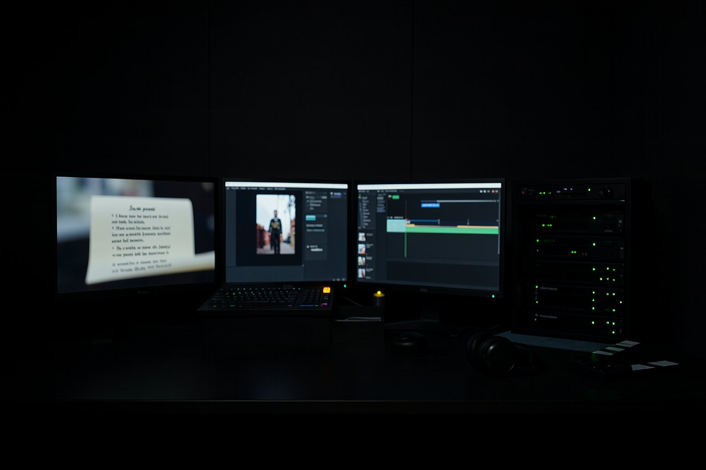
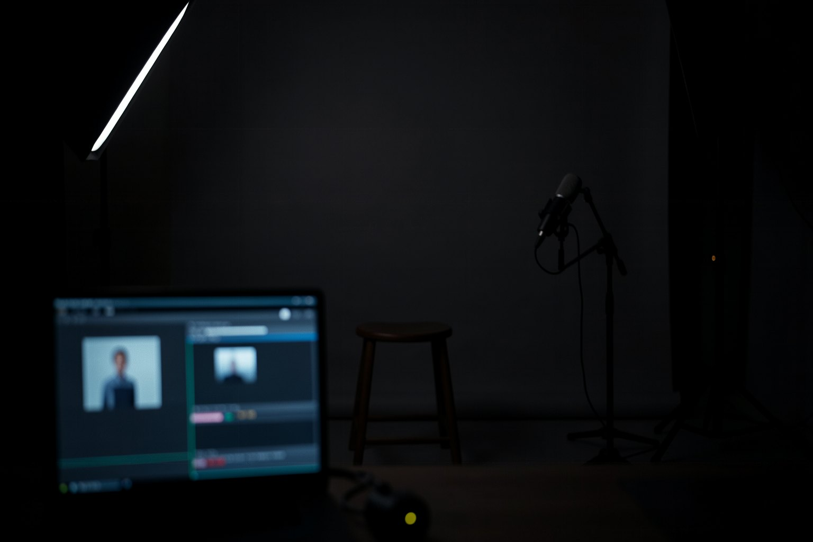

Formación Cine con IA · curso 4 de 6 · 8 clases
La fábrica de video con agentes: los motores abiertos de INEMA, del tema al video publicado
Explicativo con avatar, demostración de app, documental, short con compuerta de calidad, editor de reels y publicación. Tú ejecutas cada motor de INEMA en tu máquina, en un commit fijo, hasta el punto en que gastaría crédito, y te detienes ahí con la salida verificada.

- 8clases
- 8motores en un commit fijo
- 22bloques probados en el kit
- 0créditos gastados
Las clases
Del mapa a YouTube: explicativo, demostración, documental, short, edición, avatar y publicación.
- Clase 1 · 12 minEl mapa de la fábrica: de lo que tienes al motor correctoINEMA tiene un motor de video para cada caso: explicativo, demostración, documental, short, publicación. Equivocarte de motor cuesta horas. En esta clase conviertes la tabla del área Vídeos en un comando que responde cuál usar, y preparas la máquina para las próximas siete clases.

Clase 2 · 18 minExplicativo con avatar y voz: explicavideos por dentroexplicavideos transforma un guion en un video explicativo con avatar, voz, escenas animadas y subtítulos. La parte cara es una sola: el estudio de avatar. En esta clase ejecutas las pruebas del motor y armas escenas, bloques y moldes de un guion tuyo, deteniéndote antes del estudio. Clase 3 · 20 minDemostración de app, clic a clicPara mostrar una app, la pantalla real convence más que cualquier animación. El video-demonstrativo dirige un navegador por tu app, toma una foto por paso con la posición del elemento clicado, narra con voz local y arma el video con cursor y zoom. En esta clase haces todo eso, con una app de ejemplo, sin crédito.
Clase 3 · 20 minDemostración de app, clic a clicPara mostrar una app, la pantalla real convence más que cualquier animación. El video-demonstrativo dirige un navegador por tu app, toma una foto por paso con la posición del elemento clicado, narra con voz local y arma el video con cursor y zoom. En esta clase haces todo eso, con una app de ejemplo, sin crédito. Clase 4 · 16 minDocumental narrado y tu versión de un video de referenciaDos motores parten de lugares distintos. docflow parte de un tema y entrega un documental corto narrado. refazvideo parte de un video de referencia y entrega tu versión en portugués, con tesis y guion tuyos. En los dos, el archivo que escribe el agente se verifica antes de cualquier generación.
Clase 4 · 16 minDocumental narrado y tu versión de un video de referenciaDos motores parten de lugares distintos. docflow parte de un tema y entrega un documental corto narrado. refazvideo parte de un video de referencia y entrega tu versión en portugués, con tesis y guion tuyos. En los dos, el archivo que escribe el agente se verifica antes de cualquier generación.- Clase 5 · 18 minShorts con compuerta de calidad: gancho, corte 9:16 y QAUn short que pierde los tres primeros segundos no tiene segunda oportunidad. MakeShorts pone dos compuertas en el camino: una en el guion, que mide el gancho antes de grabar, y una en el video, que mide formato, sonido y pantalla detenida antes de publicar. En esta lección apruebas y reprueban en las dos, con archivos de ensayo.
 Clase 6 · 15 minEdición por agente: tu editor de reelsforja-reel no edita video: te entrevista y genera una skill tuya que edita, con tu identidad y un motor de corte y ritmo probado por dentro. En esta clase abres el paquete publicado, ves qué recibe la skill hija y usas el lint de ritmo local para reprobar un hueco en la timeline antes del render.
Clase 6 · 15 minEdición por agente: tu editor de reelsforja-reel no edita video: te entrevista y genera una skill tuya que edita, con tu identidad y un motor de corte y ritmo probado por dentro. En esta clase abres el paquete publicado, ves qué recibe la skill hija y usas el lint de ritmo local para reprobar un hueco en la timeline antes del render. Clase 7 · 14 minAvatar hablante: estudio, voz y consentimientoEl avatar hablante es el paso más caro de la fábrica y el más sensible: es el rostro y la voz de una persona. En esta clase entiendes cómo entra el estudio en el pipeline y escribes dos piezas tuyas: el formulario de consentimiento de uso del avatar y una compuerta que no deja que ninguna generación comience sin un formulario válido.
Clase 7 · 14 minAvatar hablante: estudio, voz y consentimientoEl avatar hablante es el paso más caro de la fábrica y el más sensible: es el rostro y la voz de una persona. En esta clase entiendes cómo entra el estudio en el pipeline y escribes dos piezas tuyas: el formulario de consentimiento de uso del avatar y una compuerta que no deja que ninguna generación comience sin un formulario válido. Clase 8 · 18 minPublicar un video: subtítulos, miniatura, tres idiomas y YouTubeEl último motor de la fábrica lleva el video terminado a YouTube con título, descripción, etiquetas, portada y subtítulos. El yt-pubx tiene un modo de ensayo que arma todo y se detiene antes de enviar. En esta clase ensayas sin modelo y sin cuenta, ves el error más común y cierras el curso con el plan de tu primer video.
Clase 8 · 18 minPublicar un video: subtítulos, miniatura, tres idiomas y YouTubeEl último motor de la fábrica lleva el video terminado a YouTube con título, descripción, etiquetas, portada y subtítulos. El yt-pubx tiene un modo de ensayo que arma todo y se detiene antes de enviar. En esta clase ensayas sin modelo y sin cuenta, ves el error más común y cierras el curso con el plan de tu primer video.
Para quién es
- 1Quien ya usa Claude Code o Codex en la terminal y quiere producir video en serie, no uno por uno.
- 2Quien hace video para un curso, una empresa o un canal y necesita saber qué motor usar en cada caso.
- 3Quien quiere entender por dentro un pipeline de video con agentes: entrada, compuertas y salida verificada.
Lo que vas a saber hacer
- 1Elegir el motor correcto para lo que tienes y quieres, con un comando.
- 2Armar escenas y bloques de un explicativo y capturar una demostración de app clic a clic.
- 3Reprobar un short fuera del estándar y un hueco de ritmo antes de renderizar.
- 4Poner una compuerta de consentimiento antes del avatar y ensayar la publicación sin enviar nada.
Antes de empezar
- 1Linux o macOS con git, Python 3 (con PyYAML y Pillow: pip install pyyaml pillow), Node 22 o más nuevo y FFmpeg. En Windows, usa WSL.
- 2Espacio libre (estimación: unos 2 GB): el navegador del render y la voz local se descargan la primera vez que se usan. La clase 3 usa el agent-browser.
- 3Recomendado: el curso 3 (Motion por código), que enseña el HyperFrames que estos motores usan.